Rouse Operating Manual
The connected bedside station
For Rouse firmware 2.0.0 · November 2026
Contents
Meet Rouse
Rouse is the connected bedside station: clock, radio, photos and weather, for your nightstand or your desk. It has a touch screen and its own web page. Besides the time, its screen can be a radio, a weather display, or a carousel of your photos. Day to day, you use it like any alarm clock: glance at the time, tap the screen, snooze in the morning. For everything else (setting alarms, choosing a look, adding stations, photos and sounds) you use the clock’s web page on your phone, tablet or computer. There is no app to install and no account to create.
Rouse can:
- Wake you with up to 10 alarms, each with its own days, sound, volume and snooze.
- Wake you gently: the volume can rise slowly and the screen can brighten like a sunrise before the alarm.
- Wake you firmly: Extra loud is there for heavy sleepers.
- Show the weather, the date and your next alarm.
- Dim itself and switch to a night theme while you sleep.
- Play internet radio: wake up to a station, fall asleep to one, or just listen (Freenove and Waveshare).
- Show a carousel: your photos, the clock and the weather, taking turns.
- Show the weather for the next hours and days.
- Be on your phone too: a live picture of the clock you can tap, and your alarms can ring on the phone as well.
- Play sleep sounds (white noise, rain, ocean waves and others) with a sleep timer.
- Keep time through a power outage on its backup battery (if your clock has one).
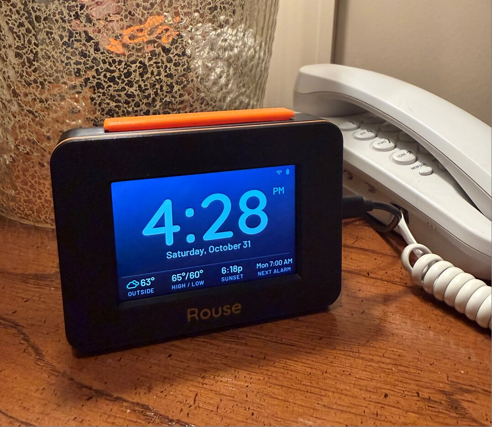
The parts of the clock
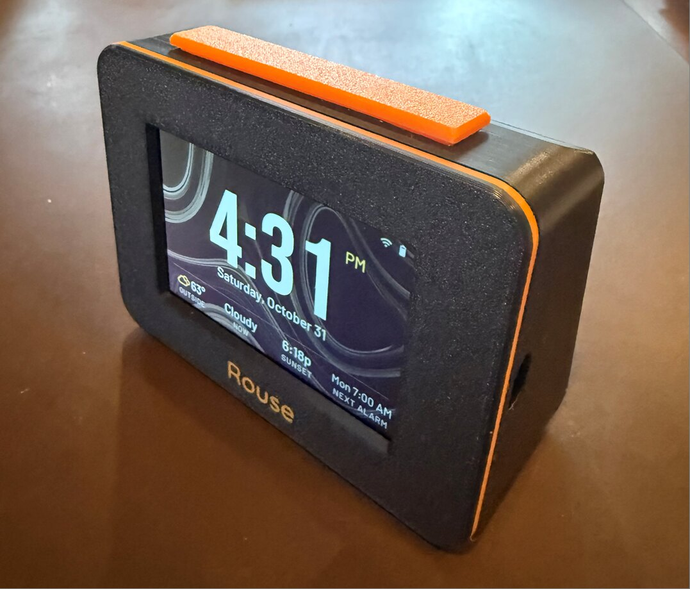
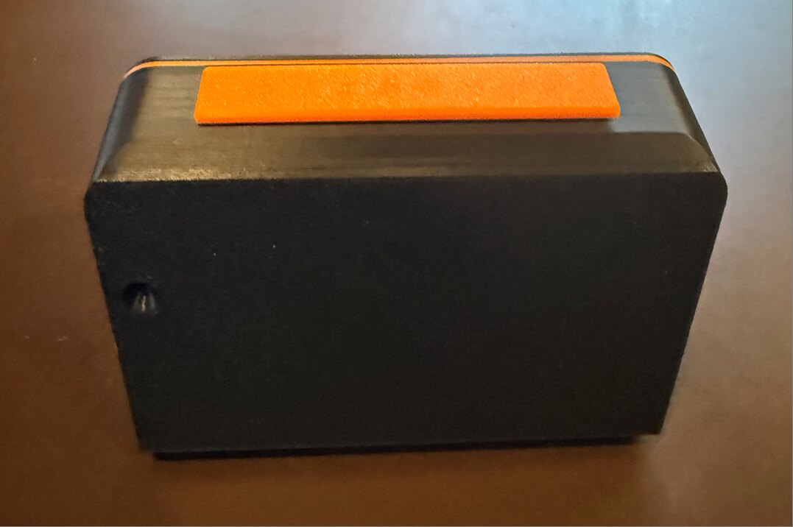
- Screen. The time and everything else. Tap it to open the menu, or the page for whatever it’s showing.
- Snooze bar (on top, if your clock has one). Press it to snooze, hold it to stop the alarm. Clocks without a snooze bar use the Snooze button on the screen instead. On the Waveshare, you can simply tap the case (see Tapping the case).
- USB-C port (right side). Power. Any USB phone charger works.
- Speaker (underneath). Sound comes out through the grille in the base.
- RESET hole (back). A paperclip pressed gently into it restarts the clock. You will rarely need it.
- Stylus holder (some cases). Holds the stylus for clocks with a pressure-sensitive (resistive) screen.
Three kinds of Rouse. Rouse runs on three different display boards. They work the same way, with a few small differences, which this manual points out where they matter. To see which one you have, open the web page and look at Settings → Status → Board:
- CYD (ESP32 3.5” display, E32R35T). Pressure-sensitive touch screen; a stylus works best. Holds up to 3 photos. No internet radio.
- Freenove (FNK0104N). Glass touch screen like a phone’s; use your finger. Holds up to 64 photos. Internet radio.
- Waveshare (ESP32-S3-Touch-LCD-3.5-C, in Waveshare’s enclosure). Glass touch screen; use your finger. Holds up to 64 photos. Internet radio.
First setup
1. Plug it in
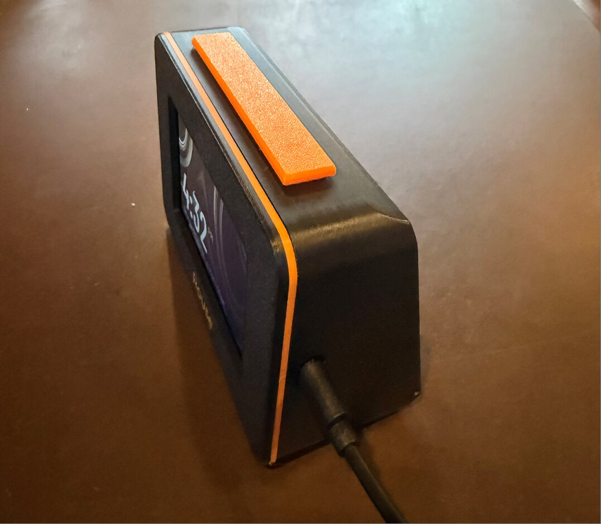
Connect the clock to a USB charger with a USB-C cable. The screen lights up within a few seconds. A brand-new clock (or one that has forgotten its WiFi) shows WiFi setup instructions.
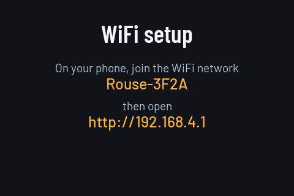
2. Connect it to your WiFi
- On your phone, open the WiFi settings and join the network the clock shows, named Rouse- followed by four characters (for example Rouse-3F2A). It has no password.
- A setup page usually opens by itself. If it doesn’t, open a web browser and go to http://192.168.4.1.
- Pick your home WiFi network from the list, type its password and tap Join network.
- The clock connects, shows the time, and turns off its setup network about a minute later.
- Reconnect your phone to your home WiFi.
Rouse uses 2.4 GHz WiFi, which almost every home router provides. If your router uses separate names for 2.4 GHz and 5 GHz, pick the 2.4 GHz one.
3. Open the clock’s web page
On any phone, tablet or computer on your home WiFi, open a browser and go to:
http://rouse.local
The address is also shown at the bottom of the clock’s menu (tap the clock screen once). If rouse.local doesn’t open, type the number address shown there instead, for example http://192.168.1.40.
Add it to your home screen. The page works like an app from your phone’s home screen. See Your clock on your phone.
More than one Rouse? The first clock on your network takes the name rouse.local; the next ones take rouse-2.local, rouse-3.local and so on. You can give each one a friendlier name in Settings → Network → Clock name, for example rouse-bedroom.
4. Set your location and first alarm
- In the web page, open Settings. Under Time, check the time zone. Under Weather, search for your town so the clock can show the weather.
- Open Alarms, tap + Add alarm, set the time and days, and tap Save.
That’s it. The rest of this manual covers everything else you can do.
Everyday use
The clock screen
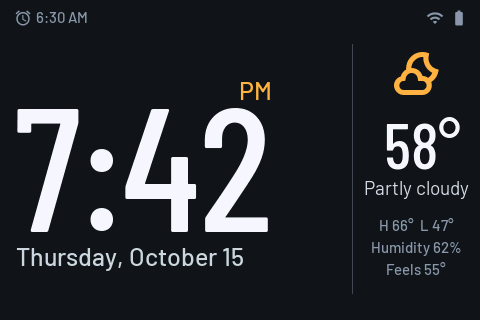
Depending on the theme and layout you choose, the clock screen can show the time, the date, the weather, your next alarm, and small WiFi and battery icons.
When an alarm rings
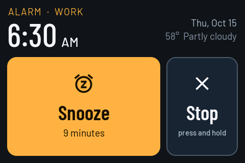
- Snooze: tap Snooze, press the snooze bar, or (Waveshare) tap the case once. The alarm rings again after the snooze time (9 minutes unless you change it).
- Stop: press and hold Stop for one second (a ring fills as you hold), hold the snooze bar down for about 1½ seconds, or (Waveshare) tap the case twice quickly. Holding prevents stopping an alarm by accident while half asleep. If you prefer a single tap, turn off Settings → Alarm behavior → Press and hold to stop.
- An alarm nobody stops turns itself off after 15 minutes (you can change this).
- While snoozing, the clock screen shows when the alarm will ring again. To cancel the snooze, open the menu and tap Cancel snooze (on the Radio, Weather or Carousel view, tap the screen, then Alarms & settings), hold the snooze bar, or (Waveshare) tap the case twice quickly.
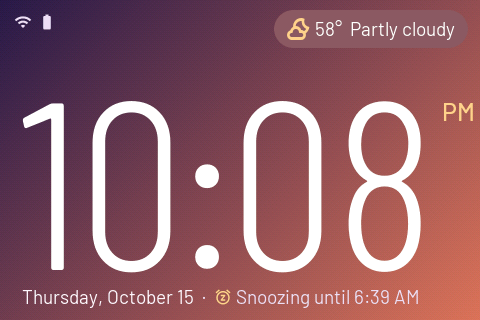
The snooze bar
If your clock has a snooze bar:
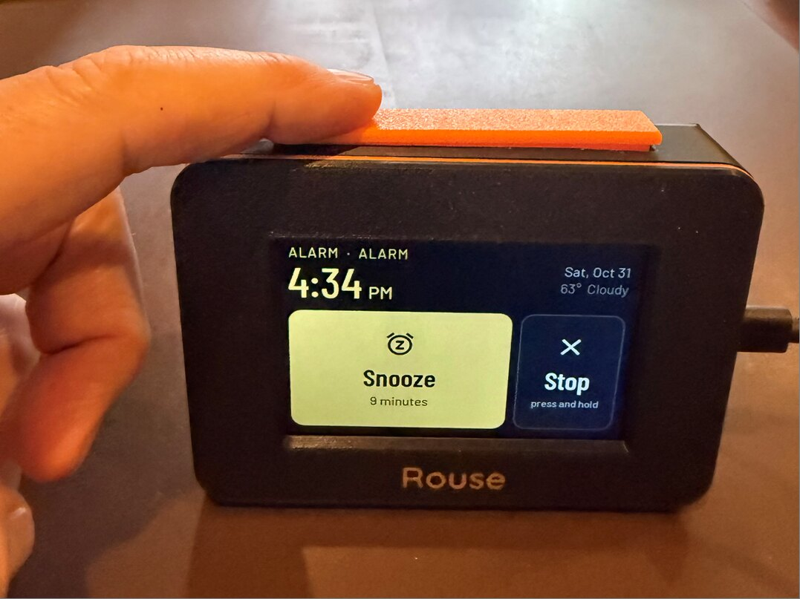
| When | Press | Hold (1½ s) |
|---|---|---|
| An alarm is ringing | Snooze (or stop, if snooze is off for that alarm) | Stop the alarm |
| Snoozing | Light up the screen | Cancel the snooze |
| A sleep sound is playing | Stop the sound | |
| At night | Light up the screen for a few seconds | |
| The menu is open | Close the menu |
Tapping the case
The Waveshare board has a motion sensor, so a Waveshare clock needs no snooze bar: while an alarm rings, tap anywhere on the case.
| When | One tap | Two quick taps |
|---|---|---|
| An alarm is ringing | Snooze | Stop the alarm |
| Snoozing | (nothing) | Cancel the snooze |
- Tap firmly with a fingertip, like knocking on a door. For two taps, make them about the same strength, a quarter of a second apart.
- After one tap the clock waits a moment (under a second) to see whether a second tap follows, then snoozes.
- Taps only do something while an alarm is ringing or snoozing. At other times they’re ignored, so bumping the nightstand does nothing.
- A hard bump of the nightstand can count as a tap. That can snooze the alarm, but never stop it: stopping always takes two taps.
- Turn it on or off, and choose how hard a tap must be, in Settings → Hardware (see Hardware). It’s on, at Normal tap, on a new Waveshare clock.
Night mode
Night mode dims the screen and switches to a dark night theme on a schedule (from 10:00 PM to 6:30 AM unless you change it). At night:
- Tap the screen to brighten it for a few seconds (10 unless you change it). Tap again while it’s bright to open the menu.
- When an alarm rings, the screen brightens so you can see it.
- If an alarm uses the sunrise light, the screen starts brightening before it rings and switches back to your day theme.
To change the schedule, the night theme or the night brightness, use Settings → Day and night. To switch night mode on or off right now, tap Night in the clock’s menu, or use Night mode on the web page’s Home tab.
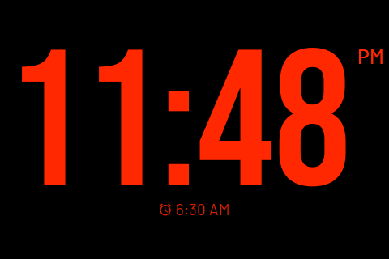
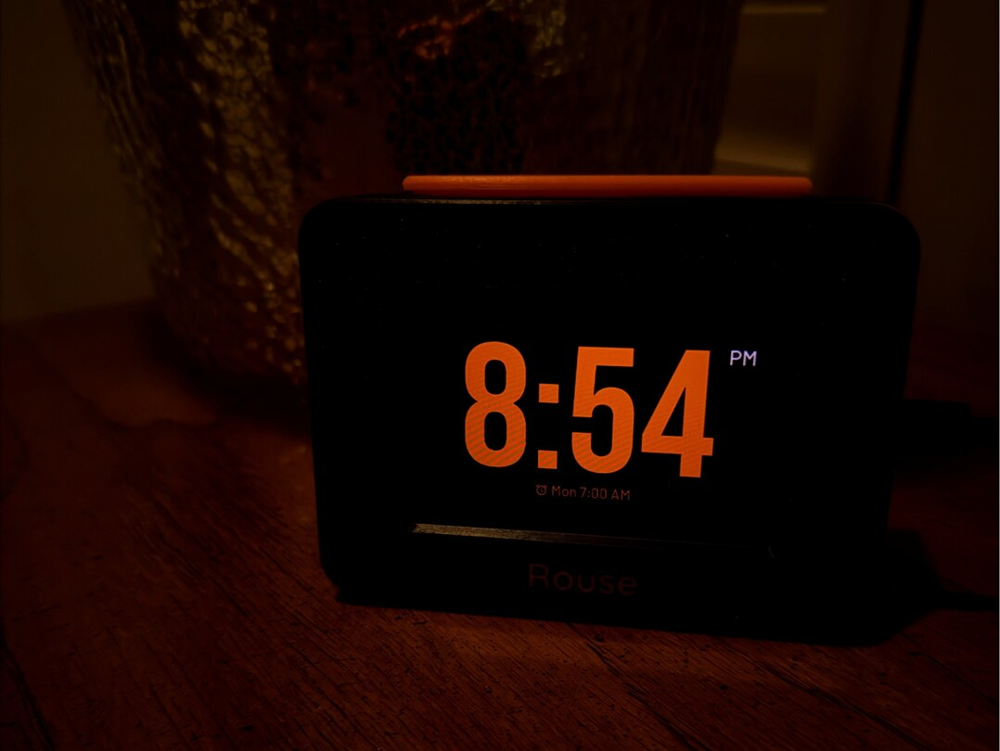
How dark the night screen can get depends on the board. The Freenove and Waveshare screens get much darker than the CYD’s, so you can use a slightly higher night brightness for easier reading without lighting up the room.
The views
The clock screen can show one of four views. Pick one in the top row of the menu, or from the Home tab of the web page. Alarms ring the same way whichever view is showing.
- Clock. The time in your chosen theme. This is what Rouse shows unless you choose otherwise.
- Radio. A station and what’s playing, with the controls to play it (Freenove and Waveshare).
- Weather. The weather now, the next hours and the next days.
- Carousel. Your photos, and if you like the clock and the weather, taking turns.
On the Clock view, a tap opens the menu. On the other three, a tap opens a page for that view: the views and Done along the top, then Alarms & settings (the menu), then the view’s own settings. Done goes back to the view.
When night mode starts, the clock comes back by itself, so the room stays dark (the Carousel can stay up at night if you want). When night mode ends in the morning, the view you chose comes back. If you pick a view other than Clock during the night, night mode turns off until you pick Clock again.
Radio
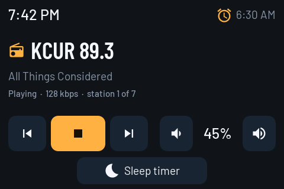
The Radio view shows the station, what’s playing (when the station says), and these controls:
- ▶ plays the station and ■ stops it. ⏮ and ⏭ go to the previous and next of your stations.
- Volume: the speaker buttons, with the volume between them.
- Sleep timer turns the radio off later. Each tap steps through 15, 30, 60 and 90 minutes, then off.
Tap anywhere else on the screen for the Radio page: your stations, four at a time. Tap one to play it. Swipe up or down, or use the arrows, to see more.
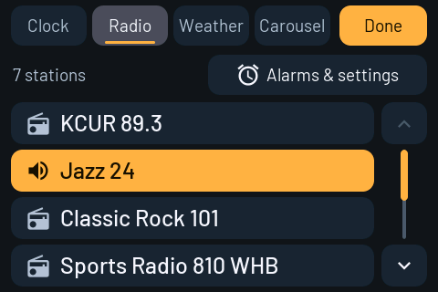
Your stations come from the web page (see Radio under Sounds). A station takes two or three seconds to start: the clock gathers a few seconds of sound first, so it keeps playing smoothly if the WiFi stutters.
Weather
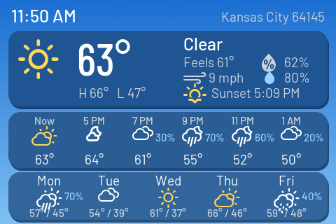
The Weather view shows the weather now (the temperature, the day’s high and low, and the conditions, plus the details you choose), the hours ahead (now, then every two hours), and the next five days. A blue raindrop with a percentage shows the chance of rain or snow, when it’s 20% or more.
The sky behind it follows the weather: blue for a clear day, grey for clouds, dark for night. For 45 minutes around sunrise and sunset it warms to orange and violet.
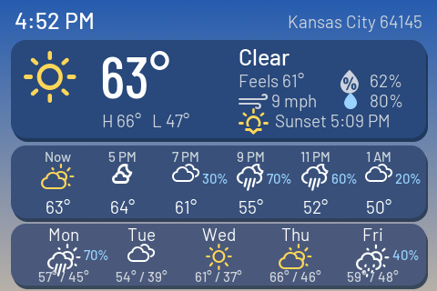
Tap the screen for the Weather page:
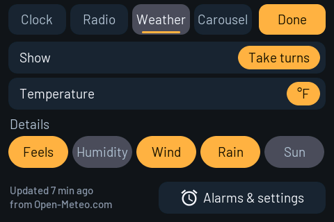
- Show. Hours and days, just Hours, just Days, or Take turns (switches every 15 seconds, with bigger pictures).
- Temperature. °F or °C (this changes it everywhere on the clock).
- Details. Which details appear beside the temperature: Feels like, Humidity, Wind, Rain chance and Sun (the next sunrise or sunset).
- The bottom left shows when the weather was last updated.
The weather needs your location (see Weather under Settings). Without one, the view says so.
Carousel
The Carousel shows your photos one after another, full screen. It can also take turns with the Clock and the Weather, so between photos you see the time and the forecast at a glance. Swipe left or right to go to the previous or next item.
Tap the screen for the Carousel page:
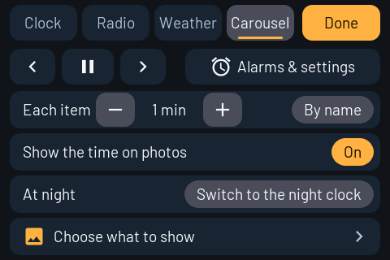
- <, ⏸ and > (top left). < and > close the page and show the previous or next item; ⏸ pauses the carousel (it turns gold) and ▶ carries on.
- Each item. How long each photo (or the clock, or the weather) shows, with − and +. Beside it, By name or Shuffled sets the order.
- Show the time on photos. A small clock in the corner of each photo. (The Clock and Weather items show the time already.)
- At night. Switch to the night clock when night mode starts, or Keep the carousel going at the night brightness.
- Choose what to show (Freenove and Waveshare). Tick the photos the carousel shows, and the Clock and Weather items at the top of the list. Untick photos that look better as theme backgrounds.
- Also show (CYD). The Clock and Weather items. The CYD’s carousel shows the photos marked In slideshow on the Themes tab.
The same settings are on the web page’s Home tab when the Carousel is showing. Add and delete photos on the Themes tab (see Photos).
The web page
The web page has five tabs: Home, Alarms, Sounds, Themes and Settings. Changes save to the clock as you make them; there is no Save button except in the alarm editor.
If your clock has a PIN (see Web page PIN), the page asks for it the first time you open it in a browser.
Home
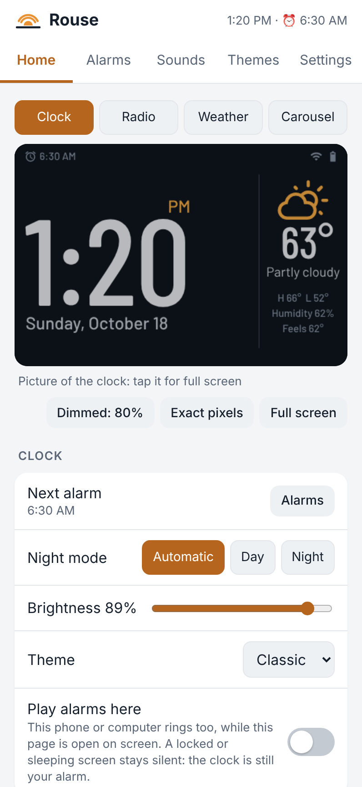
Home shows what the clock is doing right now, and is its remote control.
- Clock, Radio, Weather, Carousel across the top choose the view on the clock (see The views).
- The picture of the clock shows what’s on its screen. It’s drawn on your phone and follows the clock within a moment (on the CYD, within a few seconds). While a menu is open on the clock, the picture keeps showing the view behind it.
- Its buttons work. When the clock shows the Radio view, tap ▶, ⏮, ⏭, the volume or the sleep timer in the picture, just as on the clock. When an alarm rings, Snooze and Stop in the picture work too. A tap anywhere else opens the picture full screen.
- Dimmed shows the picture at the clock’s current brightness; tap it for full brightness. Exact pixels fetches the real screen from the clock, pixel for pixel. Full screen shows a bigger picture; turn your phone sideways for the biggest view. In full screen the buttons work too; tap anywhere else, or ✕, to close it.
Below the picture are the controls for the view that’s showing:
- Clock: the next alarm, Night mode (Automatic, Day or Night), the brightness, the theme, and Play alarms here (see Your clock on your phone).
- Radio: Now playing, with play and stop, previous and next, the volume and a Sleep timer. Your stations lists your stations: tap one to put it on the clock; ▶ Here plays it on your phone instead. Theme → Background chooses what’s behind the Radio view: Same as the clock (your clock theme’s background), Solid, Gradient or Image.
- Carousel: back, pause and next, and the same settings as on the clock. In the carousel lists the Clock and Weather items and your photos, with a switch for each. Tap a photo to see it full size or rename it.
- Weather: the conditions now and when they were updated (Update now checks again), and what the view shows: Show, Units and Details.
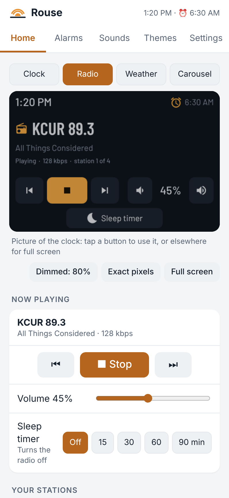
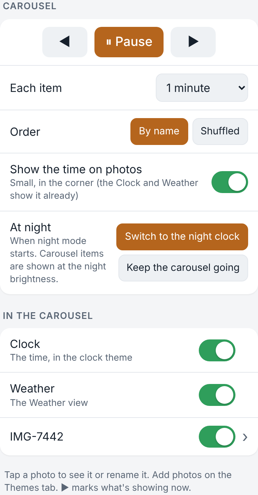
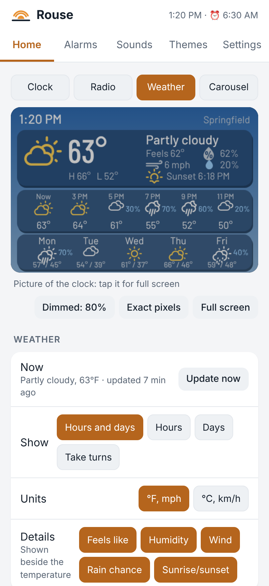
Your clock on your phone
The web page works best as an app on your phone’s home screen. First, give the clock an address that never changes:
- Use a fixed address, or reserve the clock’s address in your router. A home-screen icon remembers the address it was added with; if the router later gives the clock a different one, the icon can’t find it. Set a fixed address on the clock’s Network & tools screen (see Network).
Then add the page to your home screen:
- iPhone and iPad: open the clock’s page in Safari, tap the Share button, then Add to Home Screen.
- Android: open the page in Chrome, tap the ⋮ menu, then Add to Home screen (on some phones, Install app).
You get a Rouse icon that opens the clock’s page full screen, like an app. After an update that changes how the page looks, remove the icon and add it again to pick up the change.
Play alarms here (on the Home tab, under the Clock view) makes your phone or computer ring as well when an alarm goes off, with a Snooze and Stop pop-up, as long as the page is open on screen. A locked or sleeping phone stays silent, so the clock is still your alarm.
Alarms
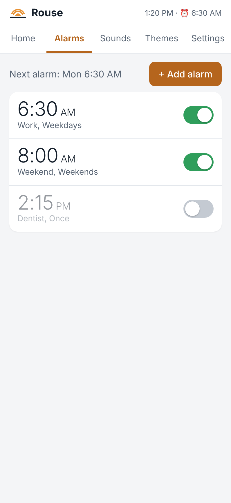
The Alarms tab lists your alarms with the next one at the top. Use the switch beside an alarm to turn it on or off, or tap the alarm to edit it. You can have up to 10.
Adding or editing an alarm
Tap + Add alarm, or tap an existing alarm. When you’re done, tap Save.
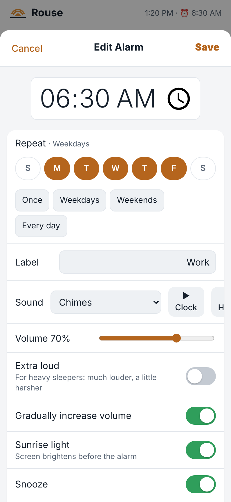
- Time. Tap the time to change it.
- Repeat. Tap the days it should ring, or use Once, Weekdays, Weekends or Every day. A Once alarm turns itself off after it rings.
- Label. A name shown on the clock when it rings, for example Work.
- Sound. Pick a built-in sound, one of your own, or one of your radio stations (Freenove and Waveshare). ▶ Clock plays it on the clock; ▶ Here plays it on your phone.
- Backup sound (for a station). The built-in sound that plays instead if the station doesn’t answer or goes quiet (see Radio).
- Volume. How loud the alarm gets.
- Extra loud. For heavy sleepers: much louder, a little harsher. Try it with ▶ Clock before relying on it.
- Gradually increase volume. Starts quietly and rises to the full volume over about 30 seconds.
- Sunrise light. The screen slowly brightens before the alarm, like dawn (starting 15 minutes before unless you change it in Settings → Alarm behavior).
- Snooze and Snooze length. Whether this alarm can be snoozed, and for how long.
- Skip next alarm. Skips just the next time it would ring (a holiday, say), then carries on as normal.
- Ring it now (test) rings the alarm right away so you can check it. Delete Alarm removes it.
Alarm behavior
Settings → Alarm behavior sets how every alarm behaves:
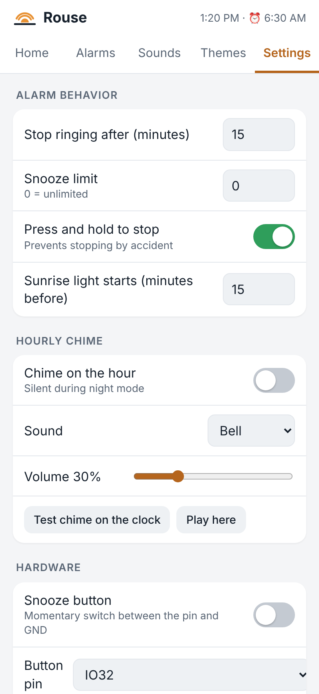
- Stop ringing after. An alarm nobody stops goes quiet after this many minutes.
- Snooze limit. How many times an alarm can be snoozed (0 = no limit).
- Press and hold to stop. Stopping needs a one-second hold, so you can’t stop it by accident.
- Sunrise light starts. How many minutes before the alarm the screen starts to brighten.
Themes
A theme is the look of the Clock view: its layout, time font, colors and background. Rouse comes with seven themes. You can change them, make copies, and create your own. One theme is used by day and one at night.
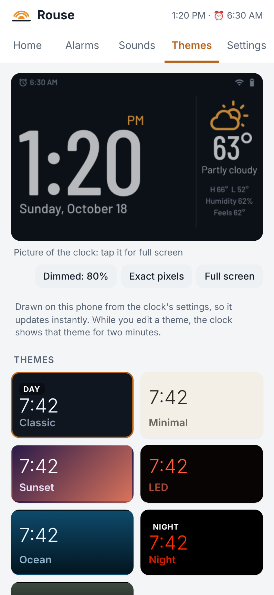
The preview
The picture at the top of Themes always shows the Clock view, even when the clock is showing another view, so you can see your theme. It is drawn on your phone, so it updates instantly as you edit. Dimmed, Exact pixels and Full screen work as on the Home tab.
Choosing and editing themes
Tap a theme to edit it. While you edit, the clock shows that theme for two minutes, then goes back to normal. To use a theme, choose Use as: Day theme or Night theme at the top of the editor.
- Duplicate theme makes a copy of the theme you are editing. This is also how you make a new theme (see below). Up to 10 themes.
- Delete theme removes the theme you are editing.
- Restore built-in themes puts back the original seven (and removes your own).
Making your own theme
New themes always start as a copy of an existing one:
- Tap the theme that’s closest to what you want.
- Tap Duplicate theme. The copy appears at the end of the list, named after the original with “copy” added, and opens in the editor.
- Give it a Name, then change its layout, font, colors and background as you like.
- To use it, choose Use as: Day theme or Night theme.
Your original theme stays as it was, so it’s safe to experiment.
The theme editor
The editor has these sections:
- Layout. Where the time and other information go: Time + side column, Weather column left, Bottom strip, Photo corner (small time, made for photos) and Centered (time only, with one small line).
- Time. The font (Modern, Light, Serif, Bold, Rounded, LED Segments, Tech), its size, whether the colon blinks, and for LED Segments whether the unlit segments show faintly. The time shrinks automatically if it doesn’t fit.
- Date format. From Thursday, October 15 to 10/15/2026.
- Colors. The time, the accent color (AM/PM, icons and the Snooze button) and the secondary text.
- Background. A solid color, a gradient, or a photo (see below).
- Show on the clock. Tick the items you want: date, temperature, weather icon, conditions, high/low, humidity, feels like, wind, sunrise/sunset, next alarm, WiFi and battery icons, and AM/PM. Items the chosen layout has no room for are greyed out.
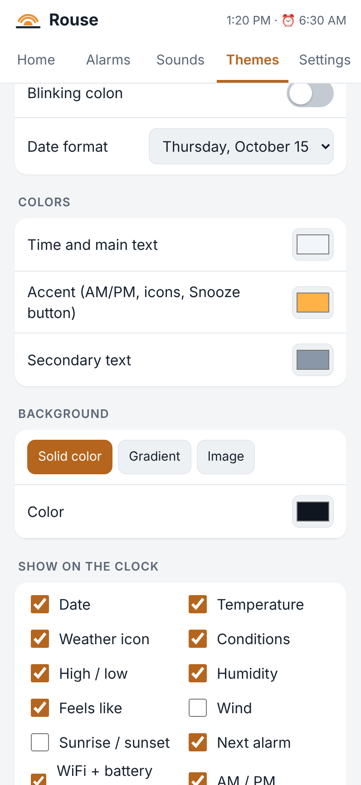
Photos
Photos are added and deleted here, on the Themes tab. A photo can be a theme’s background, and it can be shown by the Carousel (see Carousel). To use one as a background, set Background to Image.
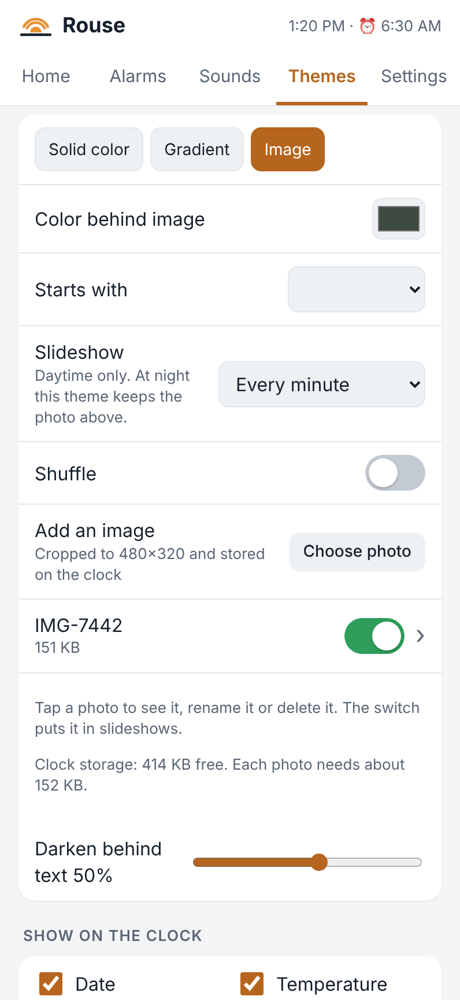
- Add an image → Choose photo picks a photo from your phone or computer. The page crops it to the clock’s screen (480 × 320) and stores it on the clock.
- Photo chooses which photo this theme shows.
- Darken behind text shades the photo behind the time and text so they stay readable.
- Below the list of photos, the page shows how much room is left. Each photo needs about 150 KB. The CYD has room for up to 3 photos; the Freenove and Waveshare for up to 64.
- Delete removes a photo from the clock. A theme that was using it switches to a gradient.
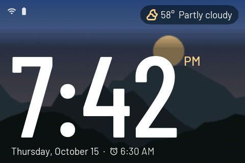
Slideshow
A photo theme can change photo by itself:
- Slideshow sets how often: every 10 seconds, 30 seconds, minute, 5 minutes or 15 minutes. Off keeps one photo.
- When the slideshow is on, the photo setting becomes Starts with: the photo it begins from.
- Shuffle shows the photos in random order; otherwise they go in order by name.
- In slideshow, beside each photo, leaves a photo out of the slideshow when turned off.
The slideshow runs only while the photo theme is your day theme. It pauses while an alarm rings or the menu is open. At night (even if the same theme is used at night) the clock keeps the Starts with photo, so a bright picture never appears at 3 a.m.
Sounds
The Sounds tab has three parts: Wake up (what your alarms can play), Fall asleep (sleep sounds) and, on the Freenove and Waveshare, Radio (your stations).
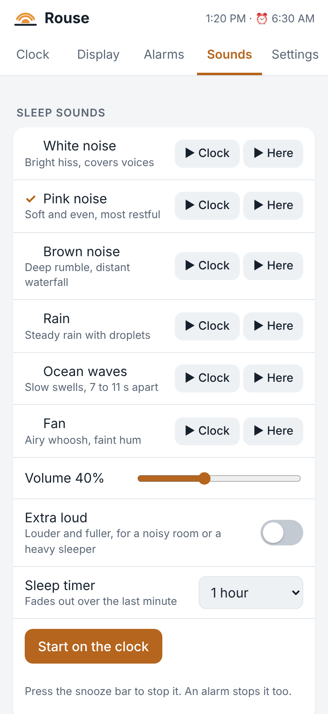
Alarm sounds
Rouse has eight built-in alarm sounds: Morning Chimes, Marimba, Gentle Rise, Harp, Birdsong, Classic Beep, Digital Alarm and Soft Bell. Wake up → Alarm tones lets you listen to each one on the clock or on your phone. Clock volume sets the volume for these previews.
On the CYD, alarm sounds play at 25% volume or more, and sleep sounds at 15% or more. The CYD drives its speaker straight from the chip, without a separate sound chip, and below those levels the sound turns rough. A gentle alarm on the CYD also starts a little louder. The Freenove and Waveshare have a real sound chip and go all the way down, which makes them the better choice for very quiet alarms.
An alarm can also wake you with one of your own sounds (below) or a radio station (see Radio).
Your own sounds
You can add your own alarm sounds: a song, a rooster, anything.
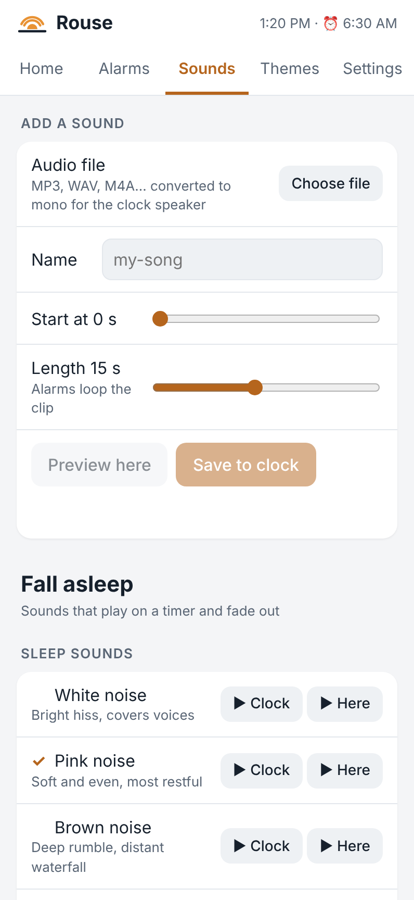
- Under Add a sound, tap Choose file and pick an audio file (MP3, WAV, M4A and most other formats).
- Give it a Name.
- Use Start at and Length to choose the part to keep (3 to 30 seconds). Alarms repeat the clip until stopped.
- Tap Preview here to listen, then Save to clock.
Your sounds appear under Your sounds and in every alarm’s sound list, marked (yours).
Sleep sounds
Rouse can play a soothing sound to help you fall asleep: White noise, Pink noise, Brown noise, Rain, Ocean waves or Fan, or one of your radio stations.
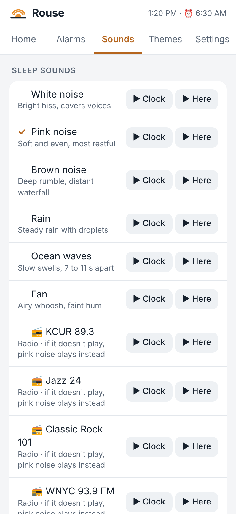
- On the clock: tap the screen, then Sleep. Sounds has the built-in sounds and Radio your stations (Freenove and Waveshare). Choose one, set the volume and the Sleep timer, and tap Start.
- On the web page: Fall asleep → Sleep sounds has the same choices, with your stations at the end of the list. ▶ Clock and ▶ Here let you listen first. Start on the clock starts it.
- Extra loud (on the web page) makes the sleep sound louder and fuller, for a noisy room or a heavy sleeper. Like Extra loud for alarms, it evens out the sound so more of it reaches the speaker.
- The sound fades out over the last minute of the timer. All night plays until morning.
- Press the snooze bar to stop it. An alarm stops it too.
- If a station doesn’t start, or stops playing, the clock switches to pink noise after 20 seconds, so you’re not left in silence.
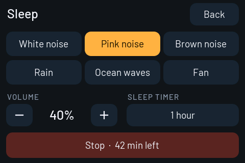
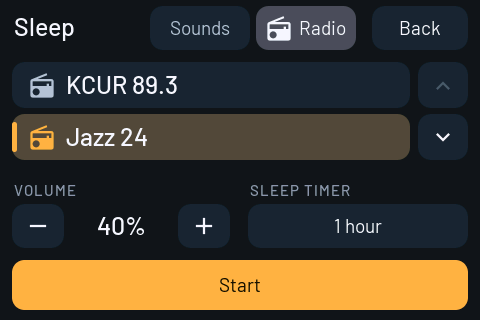
Radio
Internet radio is on the Freenove and Waveshare. You can save up to 10 stations, and use them three ways: as an alarm’s sound, as a sleep sound, and in the Radio view.
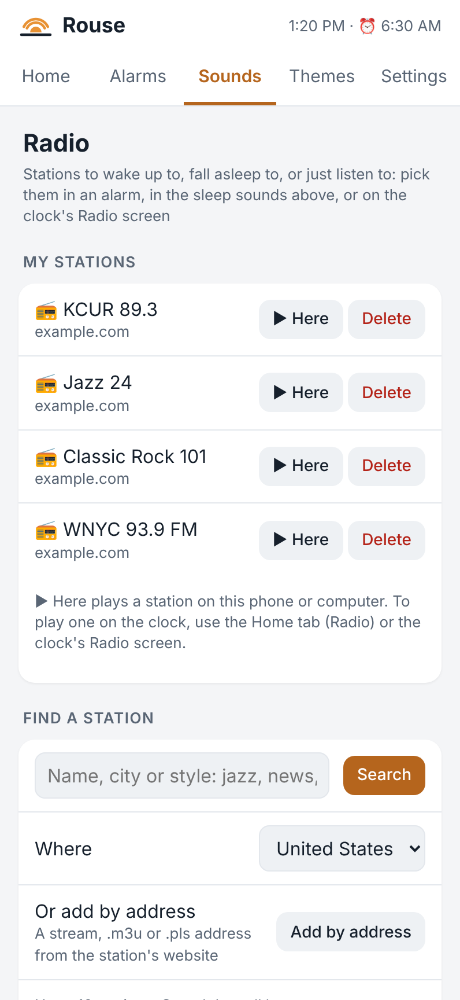
Finding a station. Under Radio → Find a station, type a station’s call letters, name, city or style (KCUR, jazz, 70s rock) and tap Search. Where narrows it to a country; it starts on yours. Several words narrow the search down. In the results:
- ▶ Here plays the station on your phone so you can try it.
- Add saves it to My stations.
- Stations Rouse can’t play are marked. Rouse plays MP3 stations, which most are; some use other formats (AAC or HLS) that it doesn’t support yet.
- The × in the search box, or Clear, empties the search.
Station listings come from radio-browser.info, a free directory that anyone can add stations to. If yours isn’t listed, look on the station’s website for its stream address (it often ends in .mp3, .m3u or .pls) and use Or add by address: give it a name, paste the address, try it with ▶ Here, and tap Add station.
My stations lists your saved stations. ▶ Here plays one on your phone; Delete removes it. Alarms and sleep sounds that used a deleted station switch to their backup sound or pink noise.
Waking up to a station. In the alarm editor, pick the station as the Sound. A Backup sound setting appears: the built-in sound to play if the station can’t be reached, doesn’t start within 15 seconds, or goes quiet. The clock connects 30 seconds before the alarm, so the station is ready when it rings, and the Gradually increase volume setting works as usual.
Hourly chime
Settings → Hourly chime plays a short sound on the hour. It stays silent during night mode.
Settings
Time
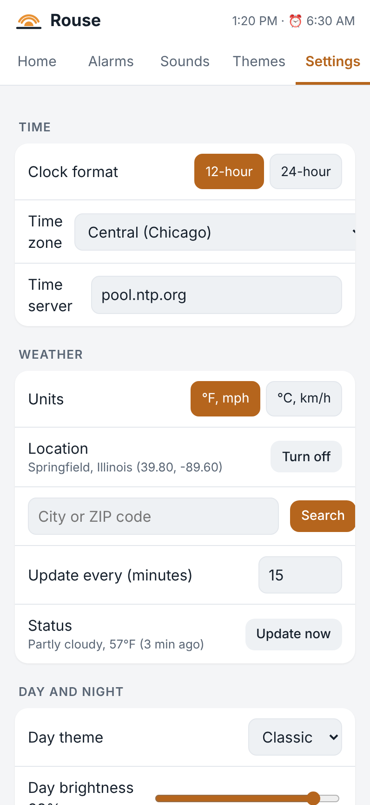
- Clock format. 12-hour or 24-hour.
- Time zone. Daylight saving time is handled automatically. (POSIX time zone and Time server are for unusual setups; leave them alone.)
The clock sets its own time over the internet. It keeps time through short WiFi outages.
Weather
- Units. °F and mph, or °C and km/h.
- Location. Search by town or ZIP code. Turn off hides the weather.
- Update every. How often the clock checks the weather.
- Status shows when the weather was last updated. Update now checks right away.
Weather comes from Open-Meteo, a free weather service. No account is needed.
Day and night
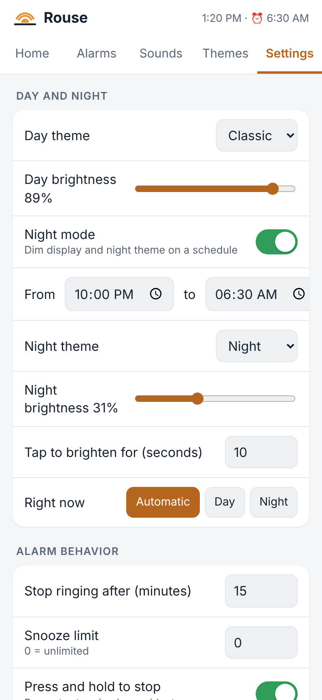
- Day theme and Day brightness.
- Night mode turns the schedule on or off; From and to set it.
- Night theme and Night brightness.
- Tap to brighten for. How long the screen brightens when tapped at night.
- Right now. Automatic follows the schedule. Day or Night overrides it until the schedule next changes over (so night mode switched off at 11 PM comes back on the following night).
Hardware
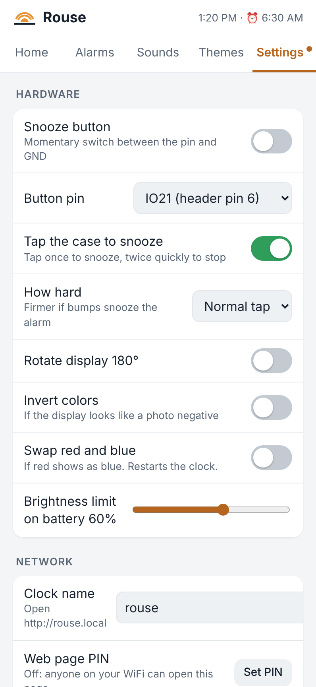
- Snooze button. Turn this on if your clock has a snooze bar. Button pin is the connection the snooze switches are wired to. The right one for your board is chosen already; change it only if the build guide told you to. The line under the switch shows whether the clock sees the button and when it was last pressed, which is handy for testing.
- Tap the case to snooze (Waveshare only). One tap snoozes, two quick taps stop (see Tapping the case). The line under the switch shows how hard your last tap was, which helps when choosing the next setting.
- How hard (Waveshare only). Gentle tap, Normal tap or Firm tap. Choose Firm tap if bumps of the nightstand snooze your alarm, Gentle tap if your taps aren’t noticed.
- Rotate display 180°. For a clock mounted upside down.
- Invert colors and Swap red and blue. For display boards whose colors look wrong (like a photo negative, or red showing as blue). You won’t need them on a clock that already looks right.
- Brightness limit on battery. During a power outage the screen is held to this brightness to make the battery last longer.
- Recalibrate touch (CYD only). If taps land in the wrong place, this shows targets to tap.
Network
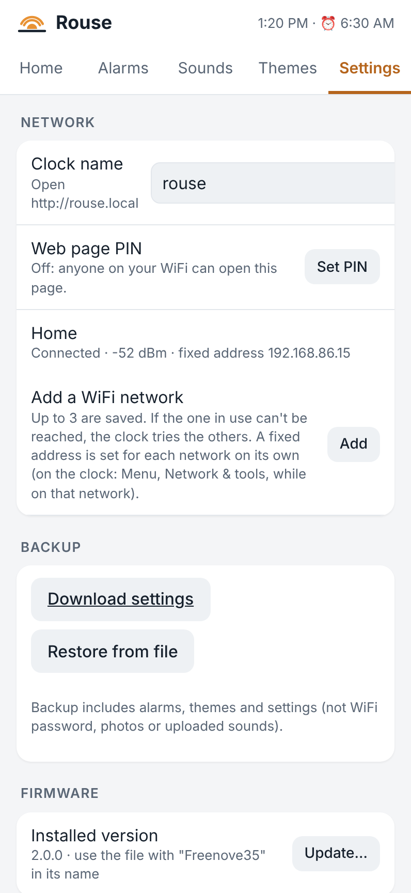
- Clock name. The clock’s web address: rouse means http://rouse.local. Changing it restarts the clock.
- Web page PIN. See below.
- WiFi networks. Up to three WiFi networks can be saved. Add looks for networks nearby. Save keeps a network as a backup; Save and switch to it makes it the clock’s main network.
How the clock chooses a network. The network you last chose (with Switch, Save and switch to it, the clock’s own network list, or the setup network) is the clock’s main network; the others are backups.
- If the WiFi drops, the clock tries the main network for two minutes, then the main network and the backups take turns.
- While it’s on a backup, it looks for the main network every few minutes and moves back as soon as it’s there (but never in the middle of an alarm, a sleep sound or the radio).
- If you switch to a network that doesn’t connect within two minutes (a mistyped password, say), the clock goes back to the one that was working.
- The Rouse- setup network opens only if the clock hasn’t connected since it was switched on and has tried every saved network for three minutes. While it’s open, the clock tries the others only now and then, so the setup network stays easy for your phone to find.
The clock’s own Network & tools screen (tap the screen, then Network & tools) shows its address and signal, and can give it a fixed address, which avoids trouble on some routers and keeps the same address for a bookmark.
- A fixed address belongs to one WiFi network. Each saved network has its own, because each network numbers its devices its own way. If you add a second network and want a fixed address on it too, switch the clock to that network, then set it on the clock’s Network & tools screen.
- Switching networks. Settings → Network → Switch moves the clock to another saved network: it restarts and joins it. Afterwards, the web page reaches the clock only from a phone or computer on that same network, at that network’s fixed address or at rouse.local. The page tells you which.
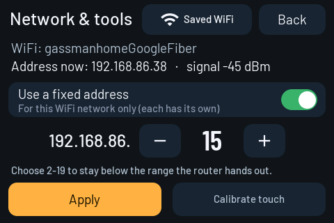
Web page PIN
Without a PIN, anyone on your home WiFi can open the clock’s web page and change its alarms. That is fine for most homes. If you’d like to keep it private, set a PIN:
- In Settings → Network → Web page PIN, tap Set PIN.
- Enter 4 to 8 digits and tap Save PIN.
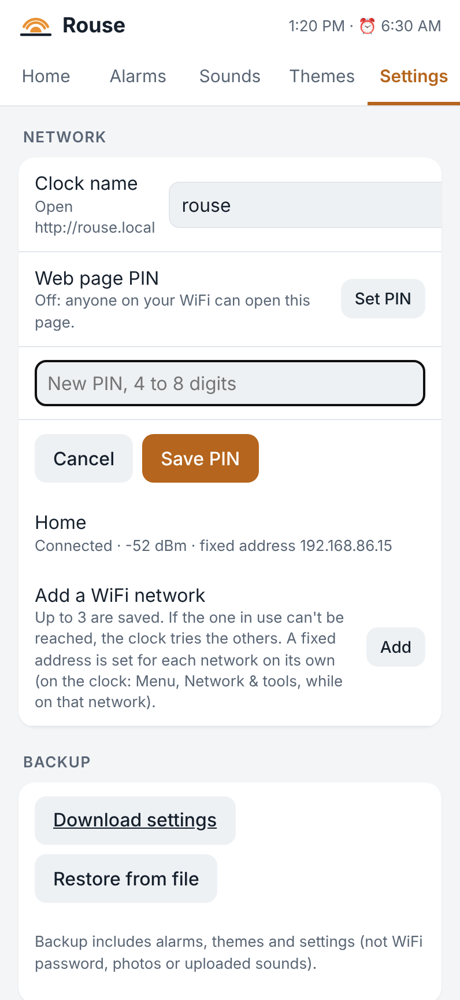
How it works:
- Each phone, tablet or computer asks for the PIN once, then stays signed in for a year, even when the clock restarts. The clock remembers up to eight devices.
- Changing the PIN signs out every other device; the one you changed it from stays signed in.
- The PIN protects everything on the page, including photos and firmware updates.
- After five wrong tries, the clock makes you wait a minute.
- The PIN is stored scrambled and is never included in a settings backup.
- Setting up a new clock (or one that has lost its WiFi) through its setup network never asks for the PIN.
- Turn off PIN removes it.
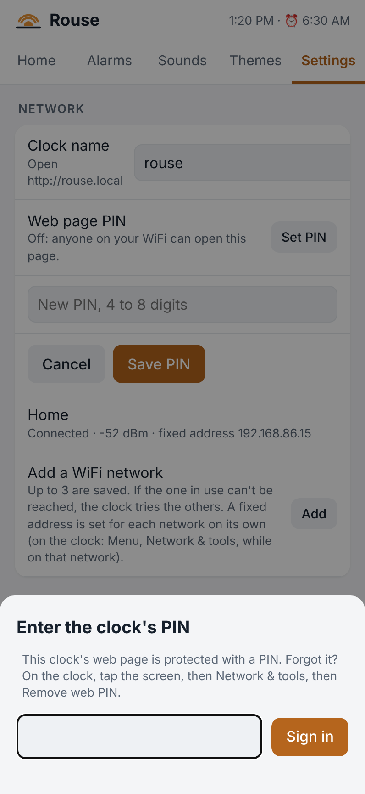
Forgot the PIN? On the clock, tap the screen, then Network & tools, then Remove web PIN. You have to be at the clock to do this, which is the point. Then set a new PIN in the web page.
Backup
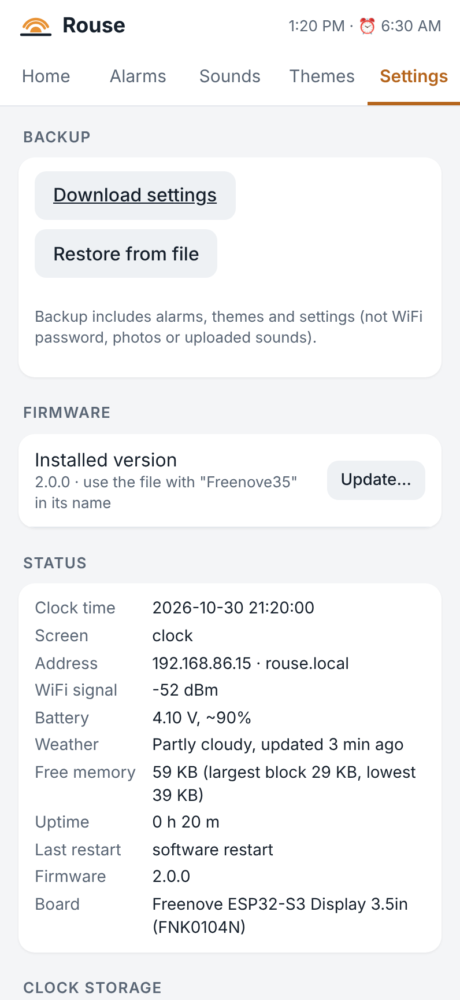
Download settings saves your alarms, themes and settings to a file; Restore from file puts them back, for example after a factory reset or onto a second clock. The backup does not include WiFi passwords, the PIN, photos or your own sounds.
Updating the firmware
New versions of Rouse add features and fix problems. Updating takes less than a minute and keeps all your settings, photos and sounds.
Installing an update from the web page
When you open the clock’s web page, it checks rouseclock.com for a newer version for your board. If there is one, a dot appears on the Settings tab, and Settings → Firmware shows Update available, with a line about what’s new and a What’s new link to the full list of changes on rouseclock.com.
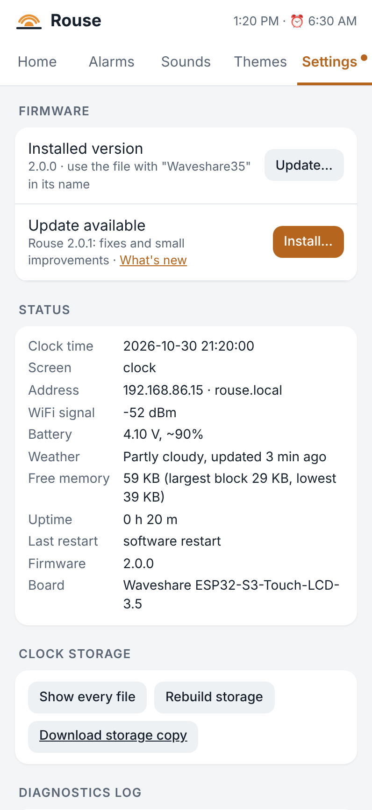
- Tap Install… and confirm. Nothing is installed until you do.
- The page downloads the update from rouseclock.com and passes it to the clock. Keep the clock plugged in and the page open; the clock restarts by itself when done.
The check is made by your phone or computer, not the clock: an ordinary web request to rouseclock.com, with nothing about you or your clock in it. If the download doesn’t work (no internet on that device, for example), the page links to the downloads page instead: use the steps below.
Installing a file yourself
- Download the new firmware file for your board. Each release has one file per board, with the board’s name in the file name: CYD, Freenove35 or Waveshare35. Settings → Firmware reminds you which one your clock needs.
- In Settings → Firmware, tap Update… and choose the file.
- Keep the clock plugged in. A progress bar shows the upload; the clock restarts by itself when done.
If you pick the wrong file, the clock refuses it and says which file it needs. Nothing is changed.
The very first install on a new board is done over USB from a computer, as described in the build guide. After that, every update goes through the web page.
Troubleshooting
The clock shows “WiFi setup” again. It started up and couldn’t reach any saved WiFi network for three minutes: the router may be off, or its name or password changed. Join the clock’s Rouse- network with your phone and choose your WiFi again (see First setup). If the router was only restarting, the clock also keeps trying your saved networks in the background.
rouse.local doesn’t open. Some phones and networks don’t support .local names. Use the number address shown at the bottom of the clock’s menu instead. Make sure your phone is on the same WiFi as the clock, not on mobile data or a guest network.
I want to move the clock to a different WiFi network. Before you move it, go to Settings → Network, tap Add, and enter the new network (it can be saved even when it’s out of range). If you’ve already moved it, unplug the clock and plug it back in: when it can’t reach any saved network for three minutes after starting, it opens its Rouse- setup network again.
The web page can’t reach the clock after switching WiFi networks. The clock has a new address on the other network. Put your phone on the same network, and open rouse.local or the address shown on the clock’s Network & tools screen. If you open the page from a bookmark with a number address, give the new network the same fixed address (see Network).
A radio station won’t play. Try it with ▶ Here on the Sounds tab. If it plays on your phone but not on the clock, it’s probably not an MP3 station: the clock says so on its Radio view. Look for another stream from the same station (many offer an MP3 one), or a different station. An alarm set to a station that doesn’t play rings with its backup sound.
I forgot the web page PIN. On the clock: tap the screen, Network & tools, Remove web PIN.
Touches land in the wrong place (CYD). Tap the screen, Network & tools, Calibrate touch, and tap each target as it appears. A stylus or fingernail works best.
The alarm is too quiet. Raise the alarm’s Volume, turn on Extra loud, or both. Test with ▶ Clock.
I can’t set a quiet alarm (CYD). On the CYD, alarm sounds play at 25% or more and sleep sounds at 15% or more; below that its simple speaker output sounds rough.
The screen is too bright at night. Lower Night brightness, and choose a night theme with dark colors (the built-in Night theme is made for this).
The web page picture is behind the clock (CYD). The CYD’s page checks the clock every few seconds; the Freenove and Waveshare tell the page straight away.
The weather says “Updating…” for a long time. Check the location in Settings → Weather, then tap Update now. The weather needs a working internet connection.
The clock seems stuck. Press a paperclip gently into the RESET hole on the back. Your settings are kept.
Something isn’t working right. Settings → Diagnostics log shows what the clock has been doing. It keeps the last lines from the previous few runs too, through restarts and power cuts, so you can see what happened before the clock restarted. Copy log copies it so you can send it along when asking for help.
The clock says it’s on WiFi, but there’s no time, weather or radio. The clock checks every two minutes that the internet answers, and writes to the log when it doesn’t. The most common cause is another device using the clock’s fixed address: reserve the address in your router, or switch the clock to an automatic address.
Start over. Settings → Factory reset erases all alarms, themes and settings and restarts the clock. It stays connected to your WiFi, and your photos and sounds stay on the clock. Download a backup first if you might want your settings back.
Still stuck? Email support@tuscanygroup.com. A copy of the clock’s log (Settings → Diagnostics log → Copy log) helps a lot.
Specifications
| CYD | Freenove | Waveshare | |
|---|---|---|---|
| Board | ESP32 3.5” display (E32R35T) | Freenove FNK0104N | Waveshare ESP32-S3-Touch-LCD-3.5-C |
| Screen | 3.5” 480 × 320 | 3.5” 480 × 320 IPS | 3.5” 480 × 320 IPS |
| Touch | Pressure-sensitive (stylus) | Glass, finger | Glass, finger |
| Room for photos | up to 3 | up to 64 | up to 64 |
| Internet radio | No | Yes | Yes |
| Views | Clock, Weather, Carousel | Clock, Radio, Weather, Carousel | Clock, Radio, Weather, Carousel |
| Lowest volume | Alarms 25%, sleep sounds 15% | Full range | Full range |
| Touch calibration | Yes | Not needed | Not needed |
| Snooze | Snooze bar (optional) | Snooze bar (optional) | Tap the case |
| Firmware file name | …-CYD-… | …-Freenove35-… | …-Waveshare35-… |
All three:
- WiFi: 2.4 GHz.
- Power: USB-C, 5 V.
- Backup battery: optional. On the CYD, a 1100 mAh battery runs the clock for about 7½ hours, and a 2000 mAh one about twice as long; other boards may draw a little more.
- Alarms: up to 10. Themes: up to 10. Saved WiFi networks: up to 3. Radio stations: up to 10.
- Internet services: time (NTP time servers), weather (Open-Meteo), the radio stations you choose, and a name lookup every two minutes to check the internet answers. Station searches and town lookups go from your phone to radio-browser.info, Open-Meteo and zippopotam.us, and the update check from your phone to rouseclock.com. Nothing else leaves your home network, and no account is needed.